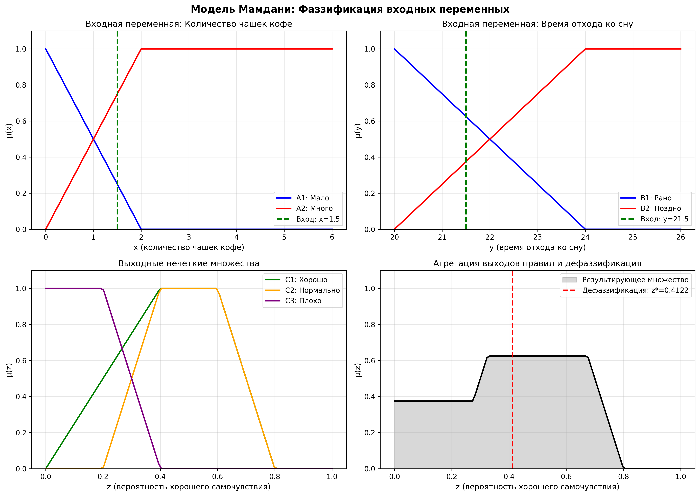
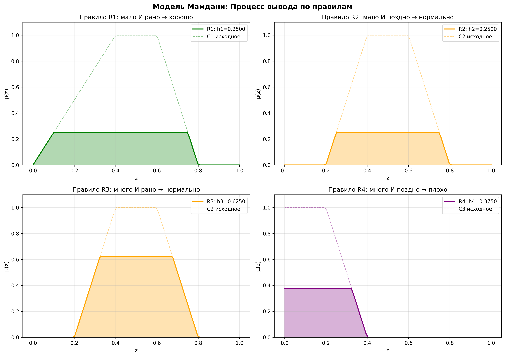
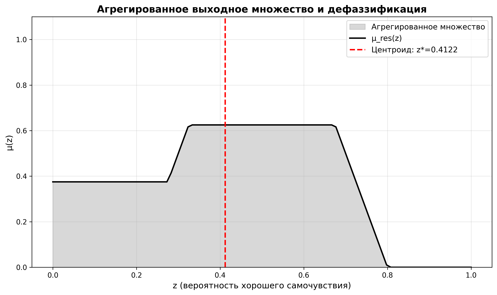

Выполнил: Тимошинов Егор Борисович
Группа: 16
Лабораторная работа 7
Модель Мамдани (часть 1)
Цель работы
Изучение модели Мамдани как одного из основных методов нечеткого логического вывода, понимание этапов её работы (фаззификация, активация правил, агрегация, дефаззификация) и практическое применение для решения задачи определения самочувствия на основе количества выпитого кофе и времени отхода ко сну.
Теоретические сведения
Модель Мамдани
Модель Мамдани — один из наиболее распространенных методов нечеткого логического вывода, предложенный Эбрахимом Мамдани в 1975 году. Данная модель использует нечеткие множества как в посылках (антецедентах), так и в заключениях (консеквентах) правил.
Модель Мамдани состоит из следующих этапов:
- Фаззификация: преобразование четких входных значений в степени принадлежности нечетким множествам.
- Активация правил: вычисление степени выполнения условий каждого правила с использованием T-нормы (обычно MIN).
- Ограничение выходных множеств: применение степени активации к выходным нечетким множествам (усечение).
- Агрегация: объединение выходных множеств всех правил с использованием T-конормы (обычно MAX).
- Дефаззификация: преобразование результирующего нечеткого множества в четкое выходное значение.
Математическое описание
Рассмотрим систему нечетких правил:
$$\mathbf{R}_1: \mathbf{ЕСЛИ} \left(\mathbf{x}_1 = \mathbf{A}_1\right) \mathbf{И} \left(\mathbf{x}_2 = \mathbf{B}_1\right) \mathbf{ТО} \left(\mathbf{y} = \mathbf{C}_1\right)$$
$$\mathbf{R}_2: \mathbf{ЕСЛИ} \left(\mathbf{x}_1 = \mathbf{A}_2\right) \mathbf{И} \left(\mathbf{x}_2 = \mathbf{B}_2\right) \mathbf{ТО} \left(\mathbf{y} = \mathbf{C}_2\right)$$
$$\ldots$$
Этап 1: Фаззификация
Для четких входных значений $x_1^*$ и $x_2^*$ вычисляются степени принадлежности:
$$\mu_{A_i}(x_1^*), \quad \mu_{B_j}(x_2^*)$$
Этап 2: Активация правил
Степень активации правила вычисляется как минимум (T-норма MIN) степеней принадлежности условий:
$$h_i = \min\left(\mu_{A_i}(x_1^*), \mu_{B_j}(x_2^*)\right)$$
Этап 3: Ограничение выходных множеств
Выходное нечеткое множество каждого правила ограничивается значением степени активации:
$$\mu_{C_i^*}(y) = \min(h_i, \mu_{C_i}(y))$$
Этап 4: Агрегация
Результирующее выходное множество получается объединением всех ограниченных множеств с использованием максимума (T-конорма MAX):
$$\mu_{res}(y) = \max\left(\mu_{C_1^*}(y), \mu_{C_2^*}(y), \ldots, \mu_{C_n^*}(y)\right)$$
Этап 5: Дефаззификация
Наиболее распространенный метод дефаззификации — метод центра тяжести (центроид):
$$y^* = \frac{\int y \cdot \mu_{res}(y) dy}{\int \mu_{res}(y) dy}$$
В дискретном случае:
$$y^* = \frac{\sum_{i} y_i \cdot \mu_{res}(y_i)}{\sum_{i} \mu_{res}(y_i)}$$
Практическая часть
Задание: Определение самочувствия на основе количества кофе и времени отхода ко сну
Постановка задачи:
Разработать модель Мамдани для определения вероятности хорошего самочувствия на следующий день на основе двух входных переменных:
- $x$ — количество выпитых чашек кофе в день (диапазон: 0–6 чашек)
- $y$ — время отхода ко сну (диапазон: 20:00–02:00, представлено как 20–26)
Выходная переменная:
- $z$ — вероятность хорошего самочувствия на следующий день (диапазон: 0–1)
Нечеткие множества входных переменных
Для переменной $x$ (количество чашек кофе):
- $A_1$ — мало чашек кофе:
$$\mu_{A_1}(x) = \begin{cases} 1 - 0.5x, & 0 \leq x \leq 2 \\ 0, & x > 2 \end{cases}$$
- $A_2$ — много чашек кофе:
$$\mu_{A_2}(x) = \begin{cases} 0.5x, & 0 \leq x \leq 2 \\ 0.5x, & x > 2 \end{cases}$$
Для переменной $y$ (время отхода ко сну):
- $B_1$ — рано ложиться спать (до 22:00):
$$\mu_{B_1}(y) = \begin{cases} 1 - 0.5\frac{y-20}{2}, & 20 \leq y \leq 22 \\ 0, & y > 22 \end{cases}$$
- $B_2$ — поздно ложиться спать (после 22:00):
$$\mu_{B_2}(y) = \begin{cases} 0.5\frac{y-20}{2}, & 20 \leq y \leq 22 \\ 0.5\frac{y-20}{2}, & y > 22 \end{cases}$$
Нечеткие множества выходной переменной
Для переменной $z$ (вероятность хорошего самочувствия):
- $C_1$ — чувствовать себя хорошо (трапециевидная функция с максимумом на [0.4, 0.6])
- $C_2$ — чувствовать себя нормально (трапециевидная функция с максимумом на [0.4, 0.6])
- $C_3$ — чувствовать себя плохо (убывающая функция с максимумом при $z = 0$)
Система правил
- $R_1$: ЕСЛИ $x = A_1$ (мало кофе) И $y = B_1$ (рано) ТО $z = C_1$ (хорошо)
- $R_2$: ЕСЛИ $x = A_1$ (мало кофе) И $y = B_2$ (поздно) ТО $z = C_2$ (нормально)
- $R_3$: ЕСЛИ $x = A_2$ (много кофе) И $y = B_1$ (рано) ТО $z = C_2$ (нормально)
- $R_4$: ЕСЛИ $x = A_2$ (много кофе) И $y = B_2$ (поздно) ТО $z = C_3$ (плохо)
Решение
Рассмотрим пример: выпито $x^* = 1.5$ чашек кофе, отход ко сну в $y^* = 21.5$ (21:30).
Шаг 1: Фаззификация
Вычисляем степени принадлежности входных значений:
- $\mu_{A_1}(1.5) = 1 - 0.5 \cdot 1.5 = 0.25$
- $\mu_{A_2}(1.5) = 0.5 \cdot 1.5 = 0.75$
- $\mu_{B_1}(21.5) = 1 - 0.5 \cdot \frac{21.5-20}{2} = 0.625$
- $\mu_{B_2}(21.5) = 0.5 \cdot \frac{21.5-20}{2} = 0.375$
Шаг 2: Активация правил (MIN для условий)
| Правило |
Условие |
Степень активации $h_i$ |
| $R_1$ |
$A_1$ И $B_1$ |
$h_1 = \min(0.25, 0.625) = 0.25$ |
| $R_2$ |
$A_1$ И $B_2$ |
$h_2 = \min(0.25, 0.375) = 0.25$ |
| $R_3$ |
$A_2$ И $B_1$ |
$h_3 = \min(0.75, 0.625) = 0.625$ |
| $R_4$ |
$A_2$ И $B_2$ |
$h_4 = \min(0.75, 0.375) = 0.375$ |
Шаг 3: Ограничение выходных множеств
Для каждого правила ограничиваем выходное множество значением степени активации:
- $\mu_{C_1^*}(z) = \min(0.25, \mu_{C_1}(z))$ для правила $R_1$
- $\mu_{C_2^*}(z) = \min(0.25, \mu_{C_2}(z))$ для правила $R_2$
- $\mu_{C_2^*}(z) = \min(0.625, \mu_{C_2}(z))$ для правила $R_3$
- $\mu_{C_3^*}(z) = \min(0.375, \mu_{C_3}(z))$ для правила $R_4$
Шаг 4: Агрегация (MAX для объединения)
Результирующая функция принадлежности:
$$\mu_{res}(z) = \max\left(\min(0.25, \mu_{C_1}(z)), \min(0.25, \mu_{C_2}(z)), \min(0.625, \mu_{C_2}(z)), \min(0.375, \mu_{C_3}(z))\right)$$
Шаг 5: Дефаззификация
Используя метод центра тяжести (центроид), получаем четкое выходное значение $z^*$.
Графики входных нечетких множеств, процесса активации правил и результата агрегации представлены на следующих рисунках:

Рисунок 1. Фаззификация входных переменных и выходные нечеткие множества

Рисунок 2. Процесс активации правил модели Мамдани

Рисунок 3. Агрегированное выходное множество и результат дефаззификации
Анализ результатов:
Модель Мамдани позволяет учесть все правила одновременно и получить результирующее нечеткое множество, которое отражает комбинированное влияние всех условий. Дефаззификация преобразует это нечеткое множество в конкретное числовое значение вероятности хорошего самочувствия.
В данном примере наибольшую активацию получило правило $R_3$ ($h_3 = 0.625$), что соответствует ситуации "много кофе и рано спать", приводящей к "нормальному" самочувствию. Это объясняется тем, что хотя выпито не очень много кофе (1.5 чашки соответствует больше "много", чем "мало"), но и легли спать не очень поздно, что компенсирует влияние кофеина.
Особенности модели Мамдани
Модель Мамдани имеет следующие характеристики:
- Интерпретируемость: выходные нечеткие множества имеют четкий семантический смысл, что делает модель понятной для экспертов.
- Гибкость: возможность использования различных T-норм и T-конорм для операций И и ИЛИ.
- Вычислительная эффективность: алгоритм является достаточно простым для реализации.
- Применимость: модель хорошо подходит для задач, где важна экспертная интерпретация результатов.
Выводы
В ходе выполнения лабораторной работы:
- Изучена модель Мамдани как метод нечеткого логического вывода.
- Реализованы все этапы модели Мамдани: фаззификация, активация правил, ограничение выходных множеств, агрегация и дефаззификация.
- Применена модель Мамдани для решения практической задачи определения самочувствия на основе количества выпитого кофе и времени отхода ко сну.
- Продемонстрировано, что модель Мамдани позволяет учитывать все правила одновременно и получать интерпретируемые результаты.
Модель Мамдани является эффективным инструментом для решения задач нечеткого вывода, особенно когда требуется сохранить семантику нечетких множеств в выходных результатах и обеспечить понятность модели для экспертов.